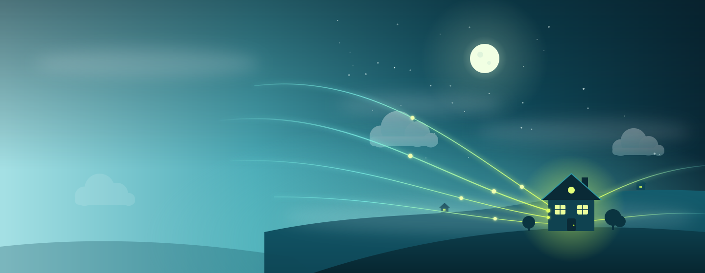
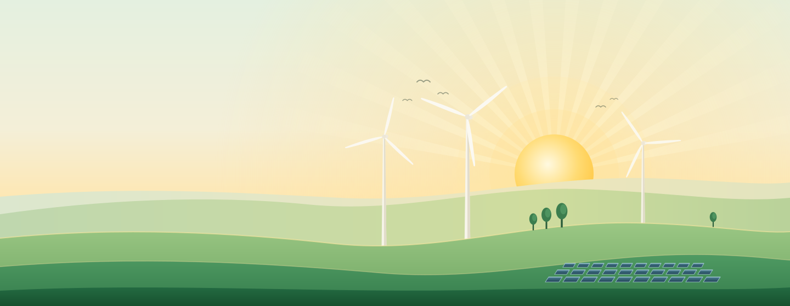
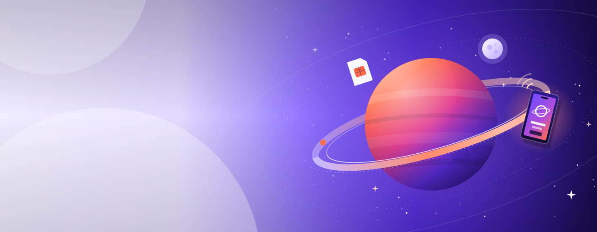

One template, many brands, in Figma
The Figma file behind the referral portal case study. It holds one variable collection with three brand modes (Nimbelo Fibre, Voltwell Energy and Orbeo Mobile), a component library bound to it, and the referral journey for each brand, from landing to rewards. Change the brand mode and the same components pick up new colours, fonts and border radius. Pan and zoom the Showcase board like you would in Figma.
Fictional brands, built to show the system without exposing client work. Visual assets made with AI for illustrative purposes.
Three header images, three prompts
The header image on each portal comes from a written brief to a generative AI. A good one is specific about four things: the scene, a composition that leaves room for the referral card, the brand’s own palette, and a few hard limits. Here is the prompt behind each image, next to the result.

Brief: Create a hero illustration for a fictional full-fibre broadband brand called Nimbelo Fibre. Mood: calm, modern, airy and friendly. Output one self-contained SVG, viewBox 0 0 1440 560.
Scene: A quiet night over rolling hills. A cosy house with glowing windows sits on the right, under a full moon and a few soft, translucent clouds. Four thin light trails arc across the sky and meet at the house, each with small bright nodes along the way, so it reads as fibre reaching the home.
Composition: Keep the left 40% calm and low in detail, fading to a pale teal, because a white referral card will sit on top of it. Put the focal point (house, moon, trails) on the right.
Palette: Teal #0B7285, deep ink #0B2530, soft tint #E6F6F7, and lime #C6F432 for the light trails and the window glow. Use gradients and soft glows for depth.
Limits: No text, no logos, no people. Under 10 KB. Decorative only, so no title or description inside the file.

Brief: Create a hero illustration for a fictional renewable energy supplier called Voltwell Energy. Mood: warm, optimistic and grounded, with a slightly editorial feel. Output one self-contained SVG, viewBox 0 0 1440 560.
Scene: Golden hour over layered, rolling green hills. A low sun glows behind them with soft rays fanning out across the sky. Three wind turbines stand at different heights and blade angles, a few small trees and a flock of birds sit around them, and a field of solar panels fills the bottom right.
Composition: Keep the left side open and light, a pale cream to green wash, because a referral card will sit over it. Build the turbine once (tower, rotor, blade) and reuse it at different scales and rotations so the file stays small.
Palette: Forest green #1F6F43, sun yellow #FFC53D, pale green tint #EEF6EC, ink #10261A. Warm cream in the sky, deeper greens toward the bottom edge.
Limits: No text, no logos, no people. Under 10 KB where possible. Include a short accessible description of the scene.

Brief: Create a hero illustration for a fictional SIM-only mobile network called Orbeo Mobile. Mood: bold, playful and youthful. Output one self-contained SVG, viewBox 0 0 1440 560.
Scene: A large gas-giant planet with soft violet-to-coral bands, circled by a tilted orbit ring. A small pale moon, a SIM card and a phone with a glowing screen drift in orbit, with a few signal arcs by the phone. Faint dotted orbit lines, twinkling four-point stars and tiny dots fill the space.
Composition: Planet and objects on the right half. The left fades into a pale lilac with a few oversized, soft circles, leaving room for a referral card on top.
Palette: Electric violet #5B2EFF, coral #FF6B4A, deep night #140B33, pale lilac #F1EDFF. Use gradients for the planet bands and a glow around the phone.
Limits: No text, no logos, no people. Keep the file light. Include a short accessible description of the scene.
Visual assets made with AI for illustrative purposes. Brands are fictional.